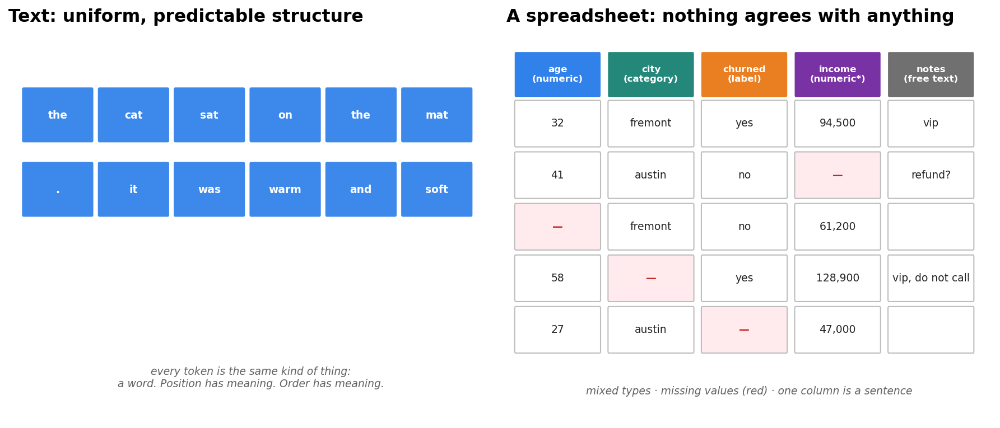
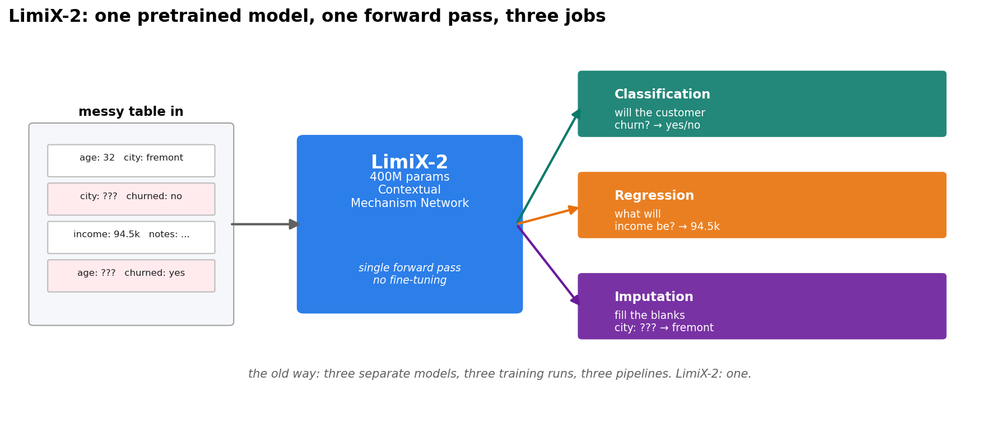
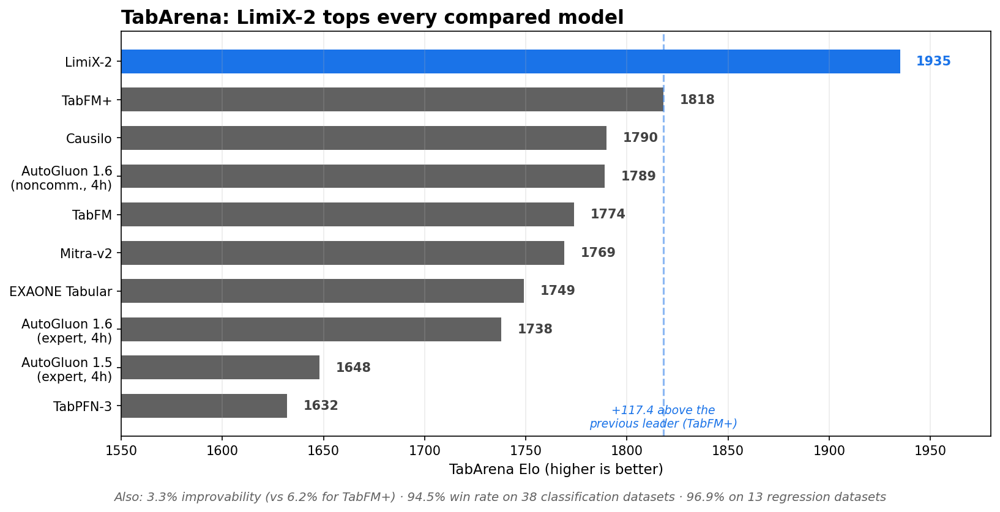
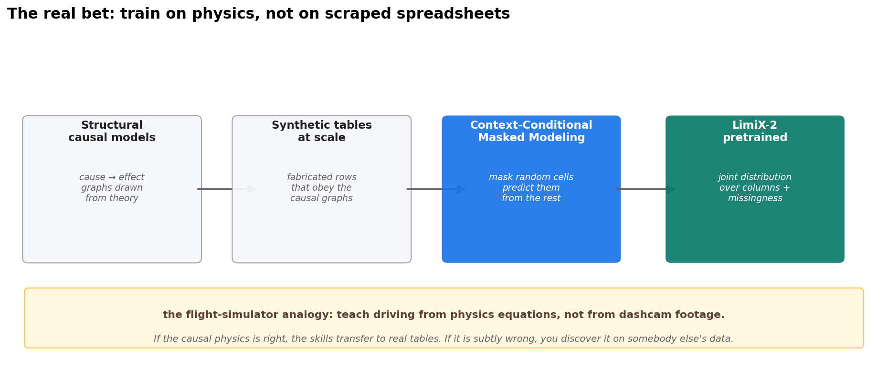

The most important AI release this week has 400 million parameters — and zero chat. Stable AI released LimiX-2 on September 16, 2026: a tabular foundation model you point at a messy spreadsheet, and one forward pass handles classification, regression, and missing-value imputation, with no task-specific fine-tuning. It posted a TabArena Elo of 1935 — a full 117.4 points above the previous leader — and beat AutoGluon 1.6, the industry default for automated tabular ML, across all three benchmark suites. The interesting part isn't the score. It's the training data: the model never saw a real spreadsheet. It trained on synthetic tables generated from causal theory.
ELI5: one doctor instead of three specialists
Tabular data is the unglamorous workhorse of machine learning — spreadsheets, customer records, sensor logs, medical charts. Nobody writes breathless headlines about it, but this is where most enterprise ML effort actually gets spent.
The old workflow hired three separate specialists: train a classifier to predict churn, train a separate regressor to forecast revenue, train an imputer to fill in the blanks — each tuned, validated, and retrained on its own schedule. LimiX-2 is one doctor who diagnoses, prescribes, and fills in your chart gaps in a single visit. You hand it the table; it figures out which job you need from the context, in one forward pass.
How it works: why tables resisted the foundation-model wave
Text and images fell to foundation models years ago because they have uniform structure — every token is a word, every patch is pixels. A 40-column spreadsheet with missing values, mixed types, and a free-text notes column gives a transformer nothing uniform to grab onto. Worse, every table has different columns, so a model trained on one schema doesn't transfer to another the way a language model transfers to any text.
The breakthrough lineage — pioneered by TabPFN — was to treat the table's own training rows as context at inference time: in-context learning for spreadsheets. Instead of learning a dataset, the model learns to read a dataset. The labeled rows are the prompt; the row you care about is the query.
LimiX-2's machinery, in three pieces:
- A joint-distribution objective. LimiX learns the joint distribution over all of a table's variables and their missingness via a masked objective: mask random cells, predict them from the rest. One frozen model then serves classification, regression, imputation — even tabular data generation — from the same machinery.
- The Contextual Mechanism Network. Stable AI's architecture for LimiX-2. The sibling paper on LimiX-2M (arXiv 2606.04485) targeted two failure modes of this design as it scaled: low-rank collapse — internal representations degenerating into a low-dimensional subspace — and attention bottlenecks when attending over many heterogeneous columns.
- Context-Conditional Masked Modeling (CCMM). The pretraining method: conditioned on the table's context, reconstruct masked cells. The mask is the task — mask the label column and you're doing classification; mask a numeric column and it's regression; mask at random and it's imputation.
State of the art: the numbers
TabArena overall Elo, as reported by Stable AI (LimiX-2 in its default configuration; the full benchmark):
| Model | Elo ↑ |
|---|---|
| LimiX-2 | 1935 |
| TabFM+ | 1818 |
| Causilo | 1790 |
| AutoGluon 1.6 (noncommercial, 4h) | 1789 |
| TabFM | 1774 |
| Mitra-v2 | 1769 |
| EXAONE Tabular | 1749 |
| AutoGluon 1.6 (expert, 4h) | 1738 |
| AutoGluon 1.5 (expert, 4h) | 1648 |
| TabPFN-3 | 1632 |
Beyond Elo: improvability of 3.3% versus 6.2% for TabFM+ (lower is better — less headroom left for rivals), average rank 5.5, and an aggregated win count of 18.9 — roughly 3.6× TabFM+. On the classification split (38 datasets): Elo 1917, 94.5% win rate. On the regression split (13 datasets): Elo 2206, 96.9% win rate. It also ranks first on TALENT (1506) and BCCO (1432) — all three suites.
The result that should make AutoML vendors nervous: AutoGluon — the mature, ensembled, industry-default framework — loses to a single frozen 400M-parameter network that never trains on your data at all.
The genuinely interesting bet is the training data. LimiX-2 never trained on scraped real-world tables. It trained on synthetic datasets generated by structural causal models — fabricated data built to mimic the cause-and-effect relationships found in real tabular data. The analogy that sticks: teaching someone to drive in a flight simulator built from physics equations instead of dashcam footage. If the physics is right, the skills transfer cleanly and you get infinite, perfectly-labeled training data for free. If it's subtly wrong somewhere, you discover it at the worst possible moment — on someone else's production data. The benchmarks say the transfer holds across three independent suites. The open question is the ugly, department-specific spreadsheet sitting in your shared drive.
Two caveats, stated plainly. First, the Elo numbers are Stable AI's own — independent replication on benchmarks they didn't choose is what settles the gap, and it hasn't happened yet. Second, the release ships under the StableAI LimiX Non-Commercial License v1.0: weights and inference code are open, but commercial deployment is restricted. That license is the thing to watch — either it keeps LimiX-2 a research artifact, or someone pays for a commercial license and the funding-round clock starts.
Takeaways
- One frozen model now does the three core tabular jobs. Classification, regression, imputation — one forward pass, no fine-tuning, no per-task pipelines.
- The old ritual is dying. Train-per-task gradient boosting is still the default in production, but a 400M-parameter network just beat the best automated version of that ritual without training at all.
- The training-data trick matters more than the parameter count. Synthetic causal data at scale is the transferable idea — expect every tabular lab to copy it within a year.
- Watch the license, not just the leaderboard. Non-commercial licensing keeps this a research artifact until someone commercializes it.
- Trust, then verify. Self-reported Elo is a claim, not a result. Independent replication on outside benchmarks is the milestone that matters.
References: LimiX: Unleashing Structured-Data Modeling Capability for Generalist Intelligence (arXiv 2609.17488, Xingxuan Zhang et al., Stable AI, Sep 2026) · LimiX-2M: Mitigating Low-Rank Collapse and Attention Bottlenecks in Tabular Foundation Models (arXiv 2606.04485) · Code and weights: github.com/limix-ldm-ai/LimiX — LimiX-2.ckpt released 16 Sep 2026, inference code on Hugging Face · Benchmarks: TabArena, TALENT, BCCO · SmartChunks: "Stable AI's LimiX-2 Crams Three ML Jobs Into One 400M-Parameter Model" (Sep 2026).
Diagrams



